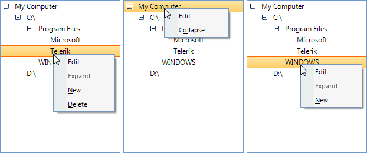

Modifying the Default Context Menu
RadTreeView provides a convenient API that will allow you to modify its context menu.
The ContextMenuOpening event that you should handle is the place
where the modifications
should be done. The event arguments of this event expose several useful properties:
Cancel: If you set this property to true,
the default context menu will not be shown.Menu: This property returns the
default context menu that is going to be shown.Node: The node for which the context menu is
invoked. This node is a data node of type RadTreeNode. You will find useful three properties of the
Node:Text:
Returns the text of the node. This comes in handy when you want to conditionally
modify the context menu depending on the text of the node.Level:
This property returns an integer that indicates the level of the node in the three hierarchy.
The level index is zero-based.DataBoundItem: If RadTreeView is data-bound, each data node
(of type RadTreeNode) has an associated DataBoundItem. DataBoundItem is the object
of the underlying data source for which a RadTreeNode is created. You may need to modify the
context menu depending on the data that you can extract from the DataBoundItem object.TreeViewElement: TreeViewElement (of type RadTreeViewElement) is the main
element of RadTreeView control.TreeView: TreeView is the RadTreeView control for which
the ContextMenuOpening is fired.
Accessing default menu items
Depending on your scenario, you may need to show/hide/enable/disable some items
of the default context menu. But how to determine in code which is the item that you want to modify?
The items of the default context menu can be recognized by their Name property.
This gives you freedom when you want to apply a custom
TreeViewLocalizationProvider
, because the Name value is not changed, hence your code.
Here are the items of the default context menu and their respective Name values:
| Text | Name |
| Expand | ExpandCollapse |
| Collapse | ExpandCollapse |
| New | New |
| Edit | Edit |
| Delete | Delete |
| Cut | Cut |
| Copy | Copy |
| Paste | Paste |
Example: Removing items depending on nodes' Level and DataBoundItem
Let's assume that we have a RadTreeView bound to a DataTable of Files and Folders.
This data-table has ID, Name, IsSystemItem and ParendID fields. The records in this table
refer to each other by the ID-ParentID relation. The nodes of RadTreeView will show the Name
of the records.
Let's now assume that we want to hide the Delete
menu item for nodes of those records that have their IsSystemItem set to true.
Additionally, we want to hide the New menu item for nodes
that exist at the top level of the tree.
Here is a table of the data that we are going to pass to RadTreeView:
| ID | Name | IsSystemItem | ParentID |
| 0 | My Computer | true | -1 |
| 1 | C:\ | true | 0 |
| 2 | D:\ | true | 0 |
| 3 | Program Files | true | 1 |
| 4 | Microsoft | false | 3 |
| 5 | Telerik | false | 3 |
| 6 | WINDOWS | true | 1 |
Following our requirements, we prepare the this implementation:
[C#]
void radTreeView1_ContextMenuOpening1(object sender, Telerik.WinControls.UI.TreeViewContextMenuOpeningEventArgs e)
{
DataRowView rowView = (DataRowView)e.Node.DataBoundItem;
DataRow row = rowView.Row;
for (int i = e.Menu.Items.Count - 1; i >= 0; i--)
{
if (e.Menu.Items[i].Name == "Delete")
{
if ((bool)row.ItemArray[2] == true)
{
e.Menu.Items.Remove(e.Menu.Items[i]);
}
}
if (e.Menu.Items[i].Name == "New")
{
if (e.Node.Level == 0)
{
e.Menu.Items.Remove(e.Menu.Items[i]);
}
}
}
}
[VB.NET]
Private Sub radTreeView1_ContextMenuOpening1(ByVal sender As Object, ByVal e As Telerik.WinControls.UI.TreeViewContextMenuOpeningEventArgs)
Dim rowView As DataRowView = CType(e.Node.DataBoundItem, DataRowView)
Dim row As DataRow = rowView.Row
For i As Integer = e.Menu.Items.Count - 1 To 0 Step -1
If e.Menu.Items(i).Name = "Delete" Then
If CBool(row.ItemArray(2)) = True Then
e.Menu.Items.Remove(e.Menu.Items(i))
End If
End If
If e.Menu.Items(i).Name = "New" Then
If e.Node.Level = 0 Then
e.Menu.Items.Remove(e.Menu.Items(i))
End If
End If
Next i
End Sub
'#End Region
End Class
And here is the result: